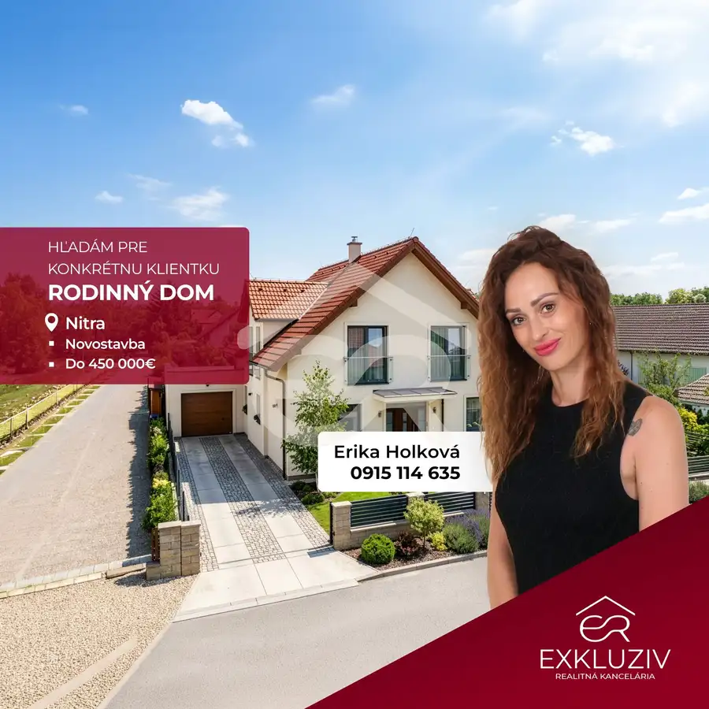
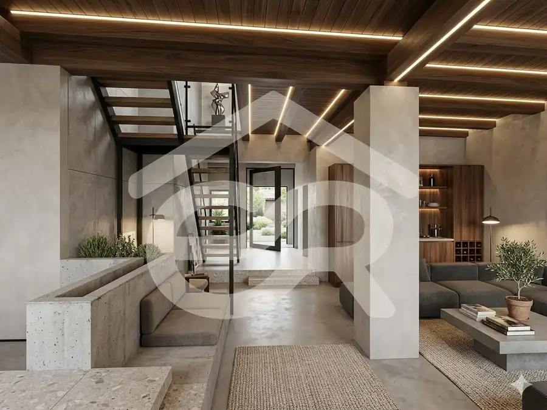
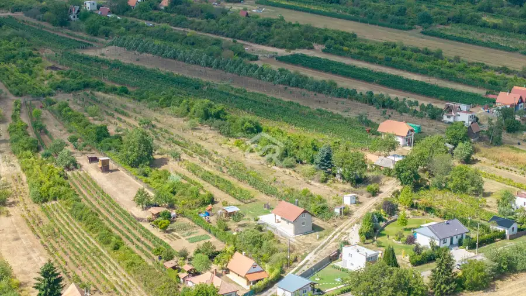

Pozemok v Jelenci - dva prístupy, veľkorysá šírka a blízkosť Nitry !
Jelenec
- Plocha1193 m²
- Poschodie0.
- Vlastníctvoosobné
O nehnuteľnosti
Hľadáte ideálne miesto pre výstavbu svojho vysnívaného domu, kde budete mať dostatok súkromia, priestoru a zároveň skutočne komfortnú dostupnosť do mesta? Ponúkame Vám exkluzívnu príležitosť – slnečný, stavebný pozemok v obci Jelenec, len 10–15 minút autom od Nitry.
Veľkorysá celková výmera 1193m² (stavebná parcela 1 044m² + podiel na súkromnej prístupovej ceste 149m²), ktorá vám poskytne maximálnu voľnosť pri architektúre a dispozícii rodinného domu.
Výnimočný rožný charakter s dvojitým prístupom – zabezpečuje maximálny komfort, flexibilitu pri projektovaní vstupu či parkovania a nezávislý prístup z obecnej aj súkromnej komunikácie.
Skvelé rozmery: Predná šírka cca 30m a dĺžka39 m (zadná časť so zúžením na cca 22 m) umožňujú pohodlné osadenie aj rozsiahlejšieho bungalovu či poschodového domu s veľkou záhradou.
Inžinierske siete a vybavenie: Na pozemku sa nachádza vlastná studňa, plyn je k dispozícii v komunikácii priamo pri pozemku, elektrina je v riešení.
Jeden vlastník, pozemok je úplne bez tiarch.
Lokalita, ktorá má štýl:
Obec Jelenec ponúka kompletnú občiansku vybavenosť a rýchle napojenie na hlavné dopravné ťahy. Spája v sebe pokojné bývanie s nádherným okolím a bleskovú dostupnosť do krajského mesta. Je to racionálna a zároveň prémiová voľba pre každého, kto nechce robiť kompromisy.
Pre viac informácií a dohodnutie obhliadky ma kontaktujte:
Erika Holková
Exkluziv Realitná Kancelária
Tel.:
Parametre
| Rozloha pozemku | 1193 m² |
|---|---|
| Poschodie | prízemie |
| Vlastníctvo | osobné |
| Voda | studňa |
| El. napätie | nie |
| Plyn | áno |
| Kanalizácia | nie |
| Terén | rovina |
| Prístupová cesta | neupravená cesta |
| Dátum zverejnenia | 24. 9. 2026 |
Kde to je
Mohlo by Vás zaujímať

Rodinné domy 450 000 €Exkluziv reality - Hľadáme 4-izbový RD pre konkrétnu klientku !! Nitra 4-izbový120 m² Hľadáme rodinný dom v Nitre pre konkrétnu klientku (Kúpa) Hľadáme modernú novostavbu rodinného domu v Nitre a blízkom okolí pre našu overenú…
Rodinné domy9 68 000 €Rozostavaný rodinný dom s potenciálom: Veľký Cetín !! Veľký Cetín 170 m² Hľadáte ideálny projekt v okolí Nitry, do ktorého vnesiete svoj vlastný rukopis? Zabudnite na zdĺhavé vybavovanie povolení a kopanie základov. Tento…
Pozemok10 24 900 €Únik z mesta na vlastný pozemok: 914 m² pokoja, zelene a ovocia! Vráble 914 m² Hľadáte miesto, kde jediným zvukom na pozadí je šum lístia a spev vtákov? Ponúkame vám unikátnu príležitosť získať vlastný kúsok raja v tichej a…